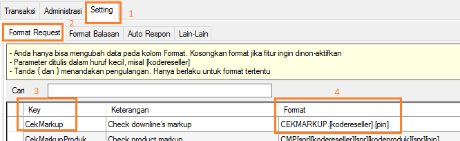

Markup di OtomaX
Markup ialah perbedaan atau selisih antara harga untuk upline dengan harga untuk downline-nya. Misalnya: seorang upline untuk produk S5 dapat harga Rp5200, kemudian downline-nya mendapat harga Rp5300, selisih antara Rp5200 dengan Rp5300 yaitu Rp100 itu disebut dengan Markup. Selanjutnya markup tersebut akan dikumpulkan secara otomatis oleh OtomaX dan menjadi komisi/bonus upline.
Fitur markup harga mulai tersedia di versi 3.3.9 dimana dengannya tidak diperlukan lagi membuat Grup
Reseller yang banyak guna memberi komisi upline seperti di versi sebelumnya, hal tersebut kini bisa
dilakukan cukup dengan mengubah nilai kolom Markup di Administrasi -> Reseller.
Sehingga mulai versi ini Grup Reseller lebih ditujukan sebagai pengelompokkan akses produk-produk
untuk anggota-anggota yang berada didalam grup yang bersangkutan, bukan lagi untuk memberi komisi upline.
Di OtomaX, markup dapat ditentukan otomatis dari server dan dapat juga upline menentukan besaran markup akan downline-nya secara mandiri sebagai berikut:
-
Klik Administrasi -> Grup Reseller; buat grup reseller, misalnya:
- Owner, untuk pemilik server,
- Retail, untuk reseller yang bertransaksi dengan HP,
- H2H, untuk reseller yang bertransaksi dengan software server pulsa, dan
- Konter, untuk toko pulsa Anda sendiri.
Jika menginginkan ketika upline mendaftarkan downline otomatis ada markup, pada Administrasi -> Grup Reseller -> Markup Default isi 100 (misalnya) seperti gambar di bawah ini:

-
Klik Setting -> Lain - lain -> key: DaftarSesamaLevel pada kolom Nilai isi 1
-> klik tombol Simpan:
-
Klik Transaksi -> Pendaftaran; daftarkan calon upline dengan grup Retail. Perhatikan
gambar di bawah ini:
-
Klik Setting -> Format Request -> key: DaftarDL; buat seperti di bawah ini:
Upline dapat mendaftarkan downline-nya dengan format di atas, contoh: DAFTAR.RIDACELL.Jln Kembangan.08567999999.17096 atau REG.RIDACELL.Jln Kembangan.08567999999.100.17096.
-
Klik Setting -> Format Request -> key: UbahMarkup.
Upline dapat mengubah besaran markup dengan format di atas, contoh: MARKUP.OX0002.50.17096.
Anda dapat membatasi berapa besaran markup maksimal yang dapat ditentukan oleh upline kepada downline-nya di Setting -> Lain - lain -> key: MaxMarkup pada kolom nilai isi 500 (misalnya); ini artinya upline hanya dapat me-markup maksimal Rp500.
Anda juga dapat mengecek dan mengubah besaran markup di Administrasi -> Reseller -> Markup:
-
Klik Setting -> Format Request -> key: CekMarkup.

Upline dapat mengecek markup downline dengan format di atas, contoh: CEKMARKUP.OX0002.17096
- Selesai
Perlu diketahui bahwa markup di versi 3.3.9 ialah markup per reseller, belum mendukung markup per produk. Bila Anda mempunyai pertanyaan seputar markup, silahkan kirim pertanyaan Anda melalui email ke alamat: support@otomax-software.com atau klik disini.
Catatan: Mulai versi 3.7.6, OtomaX telah mendukung markup per reseller dan markup per produk, klik disini.